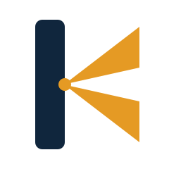

Kiran une el terreno con las decisiones de la empresa social.
Activo, en falla o de baja. Carga por lotes cuando no hay señal.
El soporte local ve cada kit y su estado en el tablero.
El técnico va al kit en falla y registra el cierre.
La prueba en terreno confirma lo que llega al informe.
Cada kit con hogar, responsable y estado. La baja lo saca del activo.
Vista general y por kit, con los indicadores de la comunidad.
El ticket nace de un kit en falla y se asigna al soporte local.
Indicadores e informe exportable con datos de operación real.
Decide dónde intervenir con un inventario vivo, sin kits fantasma.
Menos horas sin energía cuando la mantención se prioriza.
Reciben un informe que se sostiene en la operación.
- MaterialGuía breve para el soporte local.
- TallerUso del tablero y de los tickets en la comunidad.
- Traspaso operativoLa empresa social queda a cargo de Kiran.
El técnico atiende tickets todos los días. Desde aquí es operación, no proyecto.
Figura 1.Integración de Kiran en la operación de la empresa social. Los números corresponden a las cuentas de la EDT del plan.
Giannina Guerrero
Lo que aprendimos al gestionar Kiran.
Lo que el equipo hizo bien y conviene repetir.
Lo que nos costó o nos frenó durante la gestión.
Qué cambiaríamos en un próximo proyecto y cómo.
Dirigir y construir el tablero al mismo tiempo me dejó sobre mi capacidad en esa fase. En el próximo proyecto separo desde la línea base las horas de dirección y las de desarrollo, y reviso la carga por rol antes de aceptar un cambio.
Su lección en primera persona y cómo la aplicaría.
Su lección en primera persona y cómo la aplicaría.
Su lección en primera persona y cómo la aplicaría.
Equipo Kiran